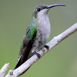
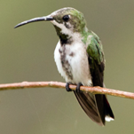
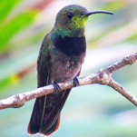

Mango Dominicano (aurulentus)
Anthracothorax aurulentus
Orden: Apodiformes
Familia: Trochilidae
Un colibrí grande de áreas abiertas en bosques, matorrales, plantaciones de café y jardines. Nota que el macho es mayormente verde arriba y negro abajo, con la garganta verde. Dentro de su rango, solo Green Mango y Green-throated Carib comparten el tamaño, la forma y el color general de esta especie.



